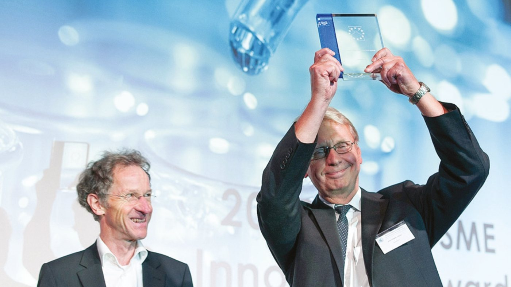
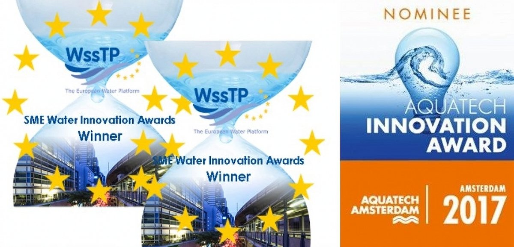
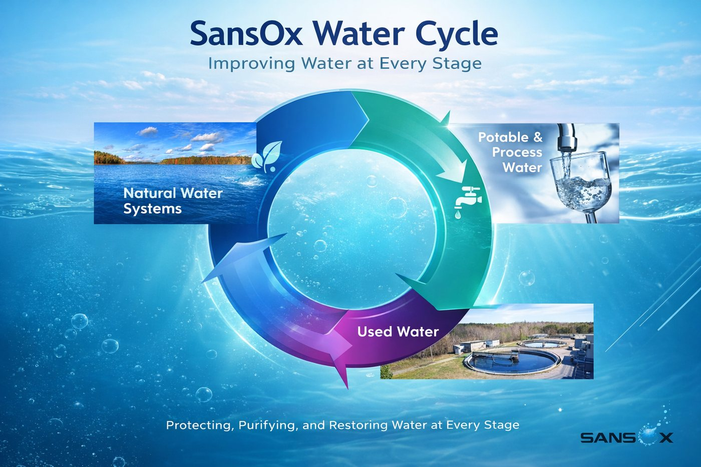

From a hydropower idea to restoring water.
Every company has a beginning. Ours began in the flowing currents of small hydroelectric plants — and in a simple belief that water could do more.
Where it began
SansOx was born from an ambitious question: could small and medium-sized hydropower plants be made more efficient, more sustainable, more climate-friendly? The focus was turbine performance and CO₂ reduction. Reality intervened — the economics of small hydropower were not strong enough. But during this work something unexpected happened: aeration, the process of adding oxygen to water, had enormous untapped potential. That single insight changed the direction of the company.
From energy to oxygen
Originally named Happihyrrä Oy, the company rebranded to Sanso — a Japanese term for oxygen. Regulatory requirements added an "X", sparking playful readings: "sans" is French for "without", plus "Ox" for oxygen. The turbine stayed on the drawing board; the focus shifted to OxTube, a product for dissolving gases into water.
The first breakthrough

The first OxTube prototype was tested in Kokkola, where it removed iron from surface water — proof of concept. Recognition followed: Best Innovation in the European Water Industry (Water Europe/WSSTP, 2014), Best Aeration Company and the SaoxFuge award (2015), and IroxFlotation as runner-up at Aquatech 2017.

The award moment on stage. These recognitions taught a lesson common to many startups: focus is essential. SansOx streamlined everything around OxTube.

Learning from global water challenges
A multinational client reduced calcium in wastewater through CO₂ dissolution — enabling reuse and lowering discharge costs — until an acquisition put the global rollout on hold. The experience proved the potential of pH control and international partnerships. SansOx expanded to regions where water scarcity is daily reality: Saudi Arabia, Vietnam, Japan, Singapore, the Philippines. Through the EU Gateway Programme came the partnership with Unique Water — and a radon removal system meeting the strict 11 Bq/l standard. Six successful installations later, this partnership remains one of the proudest achievements.
Aquaculture and ozone innovation

With Carelian Caviar, OxTube dissolved ozone with exceptional efficiency, eliminating bacteria and viruses in aquaculture pools. This opened doors in Finland, Norway, Chile and Vietnam — though the rapid rise of recirculating aquaculture (RAS) meant adoption was slower than expected. The Carelian case in detail →
Expansion in Asia — and Covid-19

SansOx gained recognition in Korea and initiated a joint venture there. Then the pandemic halted travel and disrupted development across Korea, India and China. The company kept exploring — from restoring desert lakes in Dubai to treating pulp-and-paper wastewater. Technically promising; commercially, sometimes slower than hoped.
Returning to nature
After years of development came a simple realization: water should not only be treated — it should be restored. Projects in Dubai and India showed OxTube could eliminate algae and revive stagnant lakes. This became Nature Rejuvenation: a mission to restore natural water bodies and ecosystems, including the Baltic Sea.
A company defined by the water cycle

Nature Water protects lakes, rivers and groundwater ecosystems. Potable and Process Water ensures clean drinking water and stabilizes industrial systems. Used Water removes pharmaceuticals, PFAS precursors, dyes, COD and other pollutants before water returns to nature. Together these three stages form the core of the technology and the mission.
A story we invite the world to become part of
Making water cleaner, safer and more sustainable — for people, for industry, for nature.